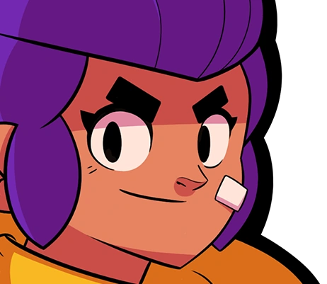
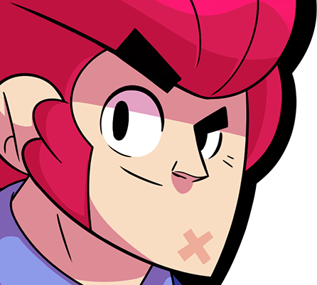
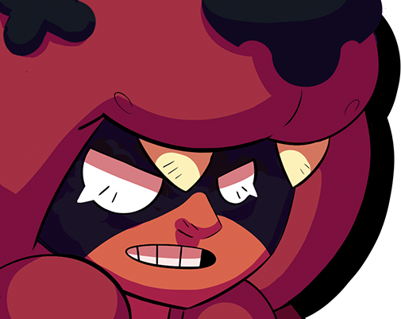
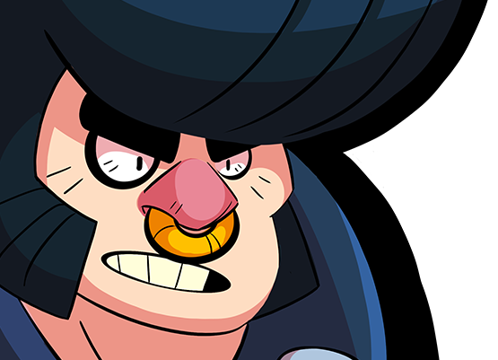
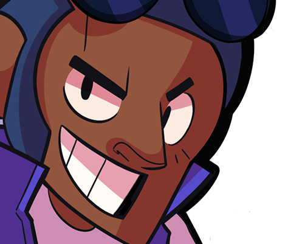
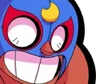
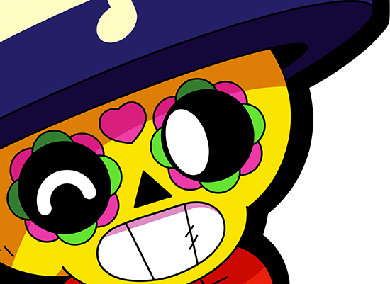
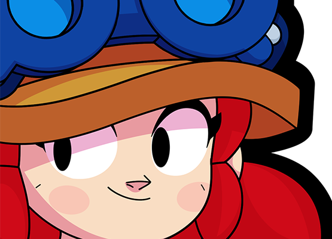
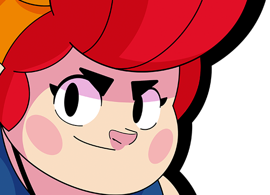
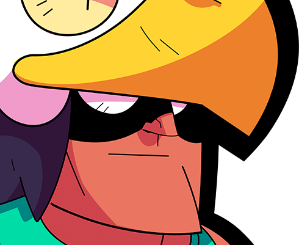

Du fängst gerade mit Brawl Stars an – oder spielst schon eine Weile, weißt aber nicht, welche Brawler du priorisieren sollst? Dieser Guide zeigt dir die 10 besten Brawler für Anfänger, erklärt warum sie so gut geeignet sind, und wie dieses Wissen auch im Brawl Mystery Quiz hilft.
Nicht jeder Brawler ist für Einsteiger geeignet. Die besten Anfänger-Brawler haben folgende Eigenschaften:

Shelly ist kein Zufall der erste Brawler – sie ist ideal für Einsteiger. Ihr Schrotflintenschuss trifft auch ohne perfektes Zielen, und ihre Super (Schildstoß) ist einfach zu aktivieren. Perfekt zum Verstehen der Grundmechaniken.

Colt ist ideal, um das Zielen zu üben. Seine Kugeln fliegen in einer geraden Linie – wer trifft, macht ordentlich Schaden. Mit der Zeit entwickelt man durch Colt das nötige Aiming-Gefühl für das gesamte Spiel.

Nita ruft mit ihrer Super einen Bären herbei, der automatisch auf Gegner zuläuft. Das lehrt, wie wichtig Positionierung und Teamunterstützung sind, ohne selbst komplizierte Mechaniken meistern zu müssen.

Bull hat viele Lebenspunkte und macht im Nahkampf enormen Schaden. Sein einfaches Spielprinzip (näherkommen und schießen) und die hohe Fehlertoleranz machen ihn perfekt für Neulinge, die aggressiv spielen wollen.

Brock ist der klassische Fernkämpfer. Seine Raketen sind langsam genug, um sie zu verstehen, und seine Super räumt ganze Büsche und Wände ab – das lehrt, wie Karten-Kontrolle funktioniert.

El Primo springt mit seiner Super direkt auf Gegner drauf – wer das meistert, versteht, wie man Gegner überrascht und überrannt. Mit vielen HP und starkem Flächenangriff ist er sehr fehlerverzeihend.

Poco heilt seine Verbündeten – das ist im Team extrem wertvoll und einfach zu spielen. Als Einsteiger lernt man durch Poco, wie wichtig Teamrollen sind und wann Heilen mehr wert ist als Schaden.

Jessie platziert mit ihrer Super ein Geschütz, das automatisch schießt. Das lehrt strategisches Denken: Wo stelle ich mein Geschütz auf? Ihr Schuss prallt von Wänden ab – das eröffnet kreative Spielzüge.

Pam hat viele LP, macht ordentlich Schaden mit ihrem Schrapnellschuss und ihre Super (Heilstation) ist im Team-Modus Gold wert. Wer Pam gut spielt, versteht Karten-Kontrolle und Positionierung.

Bo ist der perfekte Kontrolleur für Einsteiger. Seine Minen (Super) lehren, Zonen zu kontrollieren, und sein 3-Pfeil-Angriff ist einfach zu landen. In vielen Modi sehr nützlich.
Im Klassisch-Modus von Brawl Mystery sind Anfänger-Brawler wie Shelly, Colt, Nita und Bull ideale Starter-Eingaben, da sie weit auseinanderliegende Eigenschaften haben. Shelly (Starter) vs. Spike (Legendär) grenzt die Seltenheit sofort maximal ein.
Im Pixel-Modus erkennst du diese Brawler am schnellsten, da du ihre Designs am häufigsten siehst. Im Beschreibungs-Modus kennst du ihre Lore bereits – und im Emoji-Modus sind die Kombinationen für bekannte Brawler oft logischer.